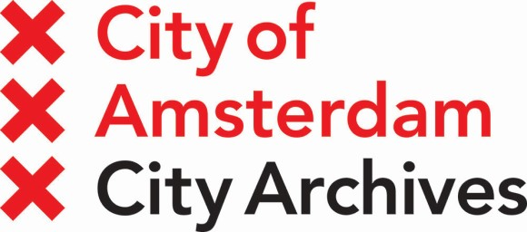

This overview is based on this XML output of the GLAMorous tool d.d. 17-01-2024.
It was generated using the GLAMorousToHTML Python script.
Also see the documentation of this tool.
Dutch (623)
's-Gravesandeplein --
't Boompje --
't Nopeind --
23 augustus --
6 september --
A.R.M. --
Aad van Leeuwen --
Aart Lamberts --
Abraham Samson Onderwijzer --
Abraham Wiegel --
Ada Prins --
Admiraal de Ruijterweg --
Albert Cuypstraat --
Albert Greiner --
Albert Hahn jr. --
Albert van Dalsum --
Alfons Vermeulen --
Algemeene Maatschappij van Levensverzekering en Lijfrente --
Alice Schwarz --
Alphons Diepenbrock --
Amstelstein --
Amstelveenseweg (Amsterdam) --
Amsterdams busmaterieel (1665-1949) --
Amsterdamsche Omnibus Maatschappij --
Amsterdamse paardentrams --
Amsterdamse veren --
André de Kruijff --
Annie Ligthart --
Annie Roland Holst-de Meester --
Annie Verhulst --
Anthon Hendrik Peter Karel van Suchtelen van de Haare --
Antoinette van Dijk --
Anton Averkamp --
Anton W. Rijp --
Arend (locomotief) --
Arend Westermanbrug --
Armand Sunierbrug --
Arnold van den Bergh (notaris) --
Artis --
Baarsjesweg --
Bakkersbrug --
Balboastraat --
Barend Coenraad Petrus Jansen --
Bart van Hove (beeldhouwer) --
Ben Viljoenstraat (Amsterdam) --
Benjamin Merkelbach --
Bernard Brouwer --
Bernard van Vlijmen --
Bertelmanplein --
Betty Holtrop-van Gelder --
Beurs van Hendrick de Keyser --
Beurspassage --
Beursplein (Amsterdam) --
Beursstraat (Amsterdam) --
Biografielijst He --
Blauwburgwal 22 --
Bloemendalergouw --
Bloemenmarkt --
Blooker (fabriek) --
Boerhaaveplein --
Bokbier (gevelsteen) --
Borneohof --
Boterwaag (Amsterdam) --
Bouman GGZ --
Bouwrecht --
Brand bij C&A --
Brinkstraat (Amsterdam) --
Broek in Waterland --
Brug 130 --
Brug 231 (Postjeswetering) --
Brug 276 --
Brug 288 --
Brug 290 --
Brug 292 --
Brug 33 --
Brug 366 --
Brug 367 --
Brug 392 --
Brug 425 --
Brug 504 --
Brug 78 --
Brug 8 --
Brug 97 --
Buiksloot --
Burgerziekenhuis --
Buslijn 29 (Amsterdam) --
Byzantium (gebouw) --
Bé Niegeman-Brand --
Carel Adolph Lion Cachet --
Carel Steven Adama van Scheltema (predikant) --
Catharina Hooft --
Catharine van Tussenbroek --
Ceramplein --
Chaja Ruchel Goldstein --
Christiaan Posthumus Meyjes sr. --
Cinetone Filmstudio's Amsterdam --
Cissy van Bennekom --
Colette Metz-la Croix --
Commandantshuis (Amsterdam) --
Cornelis Biemond --
Cornelis Dirkszstraat --
Cornelius Ubbo Ariëns Kappers --
Corry Italiaander --
Cécile Carelsen --
Daalwijkdreef --
Daniël Gerard Steenkuyl --
Dapperbuurt --
Dapperplein --
Dauwtrappen --
De Baarsjes (buurtschap) --
De Bijenkorf (warenhuis) --
De Boom (Amsterdam) --
De Jantjes (1934) --
De Joodse Invalide --
De Krommert --
De Rietlanden (rangeerterrein) --
De Star (Amsterdam) --
De Vrouw 1813-1913 --
Defileervlaggen van 1938 --
Deymanstraat --
Diamantstraat 134 --
Diederik Jansz Graeff --
Diederik Johannes Korteweg --
Dirigeerstok --
Dirk van Nimwegenbrug --
Doctrina et Amicitia --
Doklijn --
Dolf van Gendt --
Dominicuskerk (Amsterdam) --
Dorry Kahn --
Drostenburgbrug --
Durgerdam --
Edward Voûte --
Eerste Helmersstraat --
Eerste Sweelinckstraat --
Eerste Van Swindenstraat --
Eilandskerk --
Eli Content --
Elisabeth Boddaert --
Elisabeth Wolffstraat 2 --
Elise Hoomans --
Else Mauhs --
Elthetokerk --
Emanuel Polak --
Emma Morel --
Erasmuspark --
Ernst Moltzer --
Ernst Witkamp --
Ferrand Whaley Hudig (1883-1937) --
Fie Carelsen --
Flevopark 11-12 --
Flevopark 13 --
Fontein Hogeweg --
Fortunatus van Tulder --
Francis Koene --
Frans Jurrema --
Frans Malschaert --
Frans van Lennep --
Fraunhoferstraat --
Fred. J. Roeske --
Frederik Muller & Co. --
Frederiksplein (Amsterdam) --
Frida Katz --
Fusilladeplaats Rozenoord --
Galileïplantsoen --
Gebouw Industria --
Gebouw Mercurius --
Gedempte Insteekhaven --
Georgine Schwartze --
Gerard Vissering --
Gerard van Buttingha Wichers --
Gerben Wagenaarbrug --
Gerrit van Arkel --
Geschiedenis van de wereld --
Geschiedenis van het fietsen in Nederland --
Gevelsteen Sint Victor --
Gevlebrug --
Gibraltarstraat --
Gijsbrecht van Aemstel --
Gooische Stoomtram --
Goslerhuisje --
Grand Théâtre des Variétés --
Grimburgwal --
Grimburgwal 1-5 --
Guus Zeegers --
Gynaecoloog --
Géza Frid --
Haarlemmerpoort (Amsterdam) --
Haarlemmersluis (Amsterdam) --
Haarlemmerstraat 141-179 (Amsterdam) --
Haarlemmerstraat 150 (Amsterdam) --
Haarlemmerstraat 2 (Amsterdam) --
Haarlemmerstraat 51 (Amsterdam) --
Hallen Theater --
Han Hollander --
Hans Lipperheybrug --
Harm Smeenge --
Harry Mulisch --
Havenwerkers --
Heemstedestraat --
Hein Delsen --
Hendrik Burger --
Hendrik Johan Versteeg jr. --
Hendrik Maarten Krabbé --
Hendrik Salm --
Hendrik Voordewind --
Hendrikus IJkelenstam --
Henk Anderiesen --
Henk Feldmeijer --
Henk Sneevliet --
Henk Twelker --
Henri Berssenbrugge --
Henrick de Keijserplein --
Henriette Polak --
Henriëtte Bosmans --
Herengracht 107 --
Herman Ambrosius Jan Baanders --
Herman Jan van den Brink --
Herman Roelvink --
Het meisje met de blauwe hoed (film) --
Het witte dijkhuis --
Hildo Krop --
Hollandia-Kattenburg --
Honthorststraat --
Hoofdkantoor Amsterdamsche Bank --
Hortusbrug --
Houten Hoofd --
Houtmanspoorbrug --
Hr.Ms. Piet Hein (1896) --
Huda Sha'arawi --
Hugo Kaagman --
Hugo de Groot (componist) --
Héman Verhuurservice --
Iepenplein --
J.G. Wattjes --
J.J. Cremerplein --
Jac.P. Thijsseplein --
Jacob Heinenbrug --
Jacob Merkelbach --
Jacob Olie --
Jacobus Augustinus van Straaten --
Jacobus van Looy --
Jacqueline Royaards-Sandberg --
Jan Bosselaar --
Jan Feith --
Jan Gratama --
Jan Grégoire --
Jan Herman van Eeghen --
Jan Marsisbrug --
Jan Six (1668-1750) --
Jan Sluijters --
Jan Willem Hendrik Rutgers van Rozenburg (1874-1956) --
Jan Zeegers --
Jan van Hardeveld --
Javaplantsoen --
Jean-Louis Pisuisse --
Jo Schreve-IJzerman --
Jobs Wertheim --
Jodenbreestraat (Amsterdam) --
Johan Braakensiek --
Johan Pieter Wibaut --
Johan de Witt (schip, 1920) --
Johan van Eerde --
Johanna Borskibrug --
Johannes Baptista Hillen --
Johannes Diderik van der Waals jr. --
Johannes Martin Bijvoet --
Johannes Petrus Everout --
Johannes van Straaten --
John Ruys --
Jonas Jacob van der Velde --
Joodse Raad voor Amsterdam --
Joop Martens (voetballer) --
Joos Banckersweg --
Jos Bekkers --
Josephus Jitta --
Jusopo Muhamad Arsath Ro'is --
KAS BANK --
Kabinet-Cals --
Kabinet-Colijn I --
Kabinet-Ruijs de Beerenbrouck I --
Kabinet-Zijlstra --
Kadoelen (Amsterdam) --
Kalfjeslaan --
Kamperfoelieweg --
Kapel van Sint Josephs Gezellen-Vereeniging --
Karel Petrus Tholens --
Karel de Bazel --
Karnstraat --
Kattenburg (Amsterdam) --
Kattenslootbrug --
Kees Fensbrug --
Kees Ivens --
Ketjen --
Kikkerbilssluis --
Kitty van Vloten --
Koekjesbrug --
Kokadorus --
Kolksluis (Amsterdam) --
Kommer Kleijn --
Koninginneweg 1 --
Koninklijke Hollandsche Lloyd --
Koninklijke Utermöhlen NV --
Koninklijke West-Indische Maildienst --
Korrelbrug --
Kraansluis --
Krugerplein (Amsterdam) --
Kweekschool voor de Zeevaart (Amsterdam) --
Laanweg --
Lambertus Hendricus Perquin --
Lammertje Zondag --
Lange Brug (Ouderkerk aan de Amstel) --
Lauriergracht 37 --
Leeuw en tijger met prooi --
Leidseplein (Amsterdam) --
Leidsepoort --
Lemstersluis --
Leo Polak --
Leon Waterman --
Leonie van Nierop (historica) --
Levantkade --
Liergouw --
Lijst van Ravensbrückgevangenen --
Lijst van bouwwerken van Alexander Kropholler --
Lijst van bouwwerken van Christiaan Posthumus Meyjes sr. --
Lijst van bouwwerken van Eduard Cuypers --
Lijst van bouwwerken van Tjeerd Kuipers --
Lijst van burgemeesters van Diemen --
Lijst van eredoctoraten van de Erasmus Universiteit Rotterdam --
Lijst van eredoctoraten van de Universiteit Leiden --
Lijst van gebouwen aan de Vijzelgracht --
Lijst van gemeentelijke monumenten in Amsterdam-Centrum --
Lijst van gemeentelijke monumenten in Amsterdam-Oost --
Lijst van gemeentelijke monumenten in Amsterdam-West --
Lijst van gemeentelijke monumenten in Amsterdam-Zuid --
Lijst van gemeentelijke monumenten in Burgwallen-Nieuwe Zijde --
Lijst van gemeentelijke monumenten in de Grachtengordel-West --
Lijst van gemeentelijke monumenten in de Jordaan --
Lijst van gouverneurs en commissarissen van de Koning in Noord-Holland --
Lijst van kerken in Amsterdam --
Lijst van personen overleden in 1945 --
Lijst van personen overleden in 1948 --
Lijst van personen overleden in 1950 --
Lijst van personen overleden in 1951 --
Lijst van personen overleden in 1967 --
Lijst van personen overleden in 1972 --
Lijst van personen overleden in 1975 --
Lijst van personen uit Berkeley --
Lijst van rectores magnifici van de Universiteit van Amsterdam --
Lijst van rectores magnifici van de Vrije Universiteit Amsterdam --
Lijst van rijksmonumenten aan de Herengracht (Amsterdam, Zuidwest) --
Lijst van rijksmonumenten aan de Kloveniersburgwal --
Lijst van rijksmonumenten aan de Kromboomssloot --
Lijst van rijksmonumenten aan de Leidsegracht --
Lijst van rijksmonumenten aan de Leliegracht --
Lijst van rijksmonumenten aan de Prins Hendrikkade --
Lijst van rijksmonumenten aan de Prinsengracht (Zuid) --
Lijst van rijksmonumenten aan de Singel (Amsterdam, Noord) --
Lijst van rijksmonumenten in Amsterdam-Oost --
Lijst van rijksmonumenten in Burgwallen-Nieuwe Zijde --
Lijst van rijksmonumenten in Burgwallen-Oude Zijde --
Lijst van rijksmonumenten in de Eerste Weteringdwarsstraat --
Lijst van rijksmonumenten in de Grachtengordel --
Lijst van rijksmonumenten in de Kalverstraat --
Lijst van rijksmonumenten in de Reguliersdwarsstraat --
Lijst van rijksmonumenten in de Spuistraat (Amsterdam) --
Lijst van rijksmonumenten in de Utrechtsestraat (Amsterdam) --
Lijst van rijksmonumenten op de Nieuwendijk (Amsterdam) --
Lijst van rijksmonumenten op het Prinseneiland --
Lijst van watertorens in Nederland --
Lijst van watertorens in Noord-Holland --
Lindengracht --
Linnaeushof (Amsterdam) --
Linnaeushof 31-42 (Amsterdam) --
Linnaeuskadespoorbrug --
Lola Cornero --
Lou Loeber --
M27-helm --
Madama Butterfly --
Marcanti (theater) --
Marek Weber --
Margareta Hudig-Frey --
Margie Morris --
Mark Kolthoff --
Markengracht --
Martinus Gerardus Tétar van Elven --
Mary Wigman --
Matthieu van Eysden --
Meer en Vaart --
Meijer de Hond --
Meindert Johannes Waller --
Meta Reidel --
Meteorologisch Instituut --
Mia Boissevain --
Michelangelostraat (Amsterdam) --
Mien Duymaer van Twist --
Mies Merkelbach --
Mirakelbrug --
Modemagazijnen Gebroeders Gerzon --
Museumbrug (Amsterdam) --
Muziek en vreugde --
NSM-brug --
NS 7700 --
Naatje van de Dam --
Nachtwachtzaal --
Nederlands Herseninstituut --
Nederlands kampioenschap schaken 1913 --
Nederlands kampioenschap schaken 1929 --
Nederlandsch Museum voor Geschiedenis en Kunst --
Nederlandsch Panopticum --
Nederlandse Spoorwegen --
Nederlandse Vereniging voor Obstetrie en Gynaecologie --
Nico Treep --
Nico van Suchtelen --
Nicolaas Beetsstraat (Amsterdam) --
Nicolaas Kroese --
Nieuw Engeland (Amsterdam) --
Nieuwe Kerkstraat (Amsterdam) --
Nieuwe Teertuinen --
Nieuwe Teertuinen 33 --
Nieuwe Uilenburgerstraat 1 --
Nola Hatterman --
Noordhollandschkanaaldijk --
Noordzeekanaal --
Ogenbliksfotografie --
Omvalspoorbrug --
Oorlogsburgemeester --
Oorlogsmonument Marnixstraat --
Oosterdoksdraaibrug --
Oude Brug (Amsterdam) --
Oudeschans (Amsterdam) --
Oudeschans 17A-23B --
Overhoeks (Amsterdam) --
Overtoom 197-205 (Amsterdam) --
Overtoom 249-253 (Amsterdam) --
Overtoom 45 (Amsterdam) --
Paardentram Hoorn - Enkhuizen --
Paleis voor Volksvlijtbrug --
Pantserschip --
Paramount Pictures --
Parelmoer --
Paul F. Sanders --
Paul Pul --
Pelikaanbrug --
Perry Sport --
Persilhuis --
Philip Anne Warners --
Philip van Hulten --
Phoenix (Dannenburg) --
Piet Bakkerbrug --
Piet Köhler --
Pieter Diepenhorst --
Pieter Jan Bijleveld (1859-1943) --
Pieter Losecaat Vermeer --
Pieter Nieuwlandstraat --
Pieter Oosterhuis --
Pieter de Hoochstraat 78 --
Plantage Middenlaan 48 --
Plantage Middenlaan 4a --
Polderweg --
Politiebureau Sloten --
Popke Stegenga Azn. --
Populierenweg --
Postjesweg (Amsterdam) --
Potgieterstraat --
Prad (reclamebureau) --
Prins Hendrikplantsoen --
Prinsengracht 70 --
Prinsengracht 927 --
RAI Amsterdam --
Raadhuisstraat (Amsterdam) --
Raampoort (Amsterdam) --
Ransdorp --
Rapenburg (Amsterdam) --
Reinier Claeszenplein --
Rembrandtplein (Amsterdam) --
Rembrandttheater (Amsterdam) --
Remmer Willem Starreveld --
Reus van Bickerseiland --
Reyer Anslostraat --
Riek Lotgering-Hillebrand --
Riekermolen --
Riekerpolder --
Rietwijkerstraat --
Rijkskantoorgebouw voor het Geld- en Telefoonbedrijf --
Rijnsburgstraat --
Rika Hopper --
Ringdijk 58 --
Roelantstraat --
Rokin (Amsterdam) --
Rokin 69 (Amsterdam) --
Rokin 9-15 (Amsterdam) --
Rosa Manus --
Rudolph Cort van der Linden --
Rudolph Hendrik Saltet --
Sam Poons --
Samuel D.J. Westendorff --
Sara Heyblom --
Schalk Burgerstraat (Amsterdam) --
Scheepvaarthuis --
Scheldeplein 1-5 --
Schellingwouder Kerkepadbrug --
Schellingwouderbreek --
Schinkel (rivier) --
Schinkelbad --
Schiphol-Oost --
Scouting in Nederland --
Seraphine Levenbach-Asscher --
Sextet (muziek) --
Simon Philip Goudsmit --
Singel 46-48 --
Sint-Annakerk (Amsterdam) --
Sint-Augustinuskerk (Amsterdam-West) --
Sint Anthoniesluis (brug) --
Sloten (gemeente in Noord-Holland) --
Sloten (plaats in Noord-Holland) --
Sloterbrug --
Sloterdijkerbrug --
Sloterkade --
Snoekjesbrug --
Solebayplein --
Spaarndammerdijk --
Spiegelgracht 38 --
Spijtellaantje --
Spoorlijn Aalsmeer - Amsterdam Willemspark --
Spoorwegjubilea in Nederland --
Spoorwegwerken Oost --
Sportpark Mosveld --
Spreeuwenpark --
Spuistraat 53 (Amsterdam) --
Staafincident --
Stadhouderskade 84 --
Stadion De Meer --
Stadionkade 113 --
Stadsreiniging (Amsterdam) --
Staringplein (Amsterdam) --
Staringplein 9 (Amsterdam) --
Station Abcoude --
Station Amsterdam Amstel --
Station Amsterdam Centraal --
Station Amsterdam Weesperpoort --
Station Amsterdam Willemspoort --
Station d'Eenhonderd Roe --
Stationsplein (Amsterdam) --
Stenen Hoofd --
Stichting Goed Wonen --
Stormvloed van 1916 --
Straatfotografie --
Suikerfabriek --
Sumatraplantsoen --
Susanne Heynemann --
Sybren Tulp --
Telefooncentrale Amsterdam-West --
Teniersstraat 1 --
Terreinafscheiding Tolstraat --
Theo van den Boogaard --
Théodore Limperg --
Tiendaagse Veldtocht --
Tilly Lus --
Timorplein --
Timorplein 21-82 --
Tjisalak (schip, 1917) --
Toegangspoort Frankendael --
Tramlijn 11 (Amsterdam) --
Tramlijn Amsterdam - Haarlem - Zandvoort --
Tramlijn Amsterdam - Volendam --
Tramstation Amsterdam Centraal --
Trompklasse (kruiser) --
Tweede van Swindenstraat --
Van Baerlestraat --
Van Bevervoorden --
Van Gendtbrug --
Van Hogendorpplein --
Van Noordtgracht --
Van Oldenbarneveldtplein --
Van Swindenspoorbrug --
Van der Helstplein --
Van der Vijverstraat --
Vana (winkelketen) --
Verdwijning van Jopie de Nigtere --
Vergulden Eenhoorn --
Victor Henri Rutgers --
Vijzelgracht 1 --
Vlooienburg --
Vogeldorp --
Vrouwen Kunst Kollektief --
Vuilnisman --
Vuilniswagen --
Vulcanus (schip, 1910) --
Waterlandse tram --
Watertoren (Amsterdam Watergraafsmeer) --
Westerdoksluis --
Westerstraat 106 (Amsterdam) --
Westerstraat 184-198 (Amsterdam) --
Wezenbrug (Amsterdam) --
Wiegbrug --
Wieger Bruin --
Wilhelm van Pruisen (1882-1951) --
Wilhelmina Gasthuis --
Wilhelmus Frederik van Leeuwen --
Willem George Frederik van Oranje-Nassau --
Willem Mengelberg (dirigent) --
Willem Royaards --
Willem Witsen --
Willem van der Veer --
Willemsbrug (Singelgracht) --
Willemsparkweg --
William Singer --
Wittenburgervaart --
Woningwet --
Wout Iseger --
Zandhoeksbrug --
Zeeger Gulden --
Zeelui (muurschildering) --
Zeevrugt --
Zijkanaal I --
Zocherstraat (Amsterdam) --
Zonneplein --
Zonnewijzer (Albert Boeken) --
Zoutkeetsbrug --
Zoutkeetsgracht 2-110 --
Zr.Ms. Admiraal van Wassenaar (1857) --
Zunderdorp
English (123)
1890s in Western fashion --
28 cm A No. 1 gun --
Abraham Samson Onderwijzer --
Ada Prins --
Allied bombings of Amsterdam-Noord --
Amsterdam --
Amsterdam Admirals --
Andreas Smits --
André de Kruijff --
Arnold van den Bergh --
Barend Coenraad Petrus Jansen --
Bart van Hove --
Berlagebrug --
Bernard van Vlijmen --
Betty Holtrop-van Gelder --
Block-setting crane --
Cals cabinet --
Catharine van Tussenbroek --
Children Playing with a Goat --
De Meer Stadion --
De Nederlandsche Bank --
Dirck Jansz Graeff --
Eilandsgracht --
Ernst Moltzer --
Expressionist architecture --
First Colijn cabinet --
First Ruijs de Beerenbrouck cabinet --
Francis Koene --
Frida Katz --
G. Ch. Aalders --
Gerard Vissering --
Gerrit van Arkel --
Gijsbrecht van Aemstel (play) --
Grimburgwal --
Guus Zeegers --
Géza Frid --
HMS Dunoon (J52) --
HNLMS Piet Hein (1894) --
HNLMS Wassenaar (1856) --
Hein Delsen --
Hendrick de Keyser --
Hendrik Maarten Krabbé --
Henri Berssenbrugge --
Henriëtte Bosmans --
Herman Schaepman --
Hildo Krop --
Indoor tanning --
International Socialist Congress, Amsterdam 1904 --
Jacob Merkelbach --
Jan Gratama --
Jan Zeegers --
Johan Braakensiek --
Johann Georg van Caspel --
Johannes Martin Bijvoet --
John Rädecker --
Joseph Athias --
Julius Röntgen --
Koninklijke Paketvaart-Maatschappij --
Lange Linschoten --
Leidsepoort --
List of King's and Queen's commissioners of North Holland --
List of King's and Queen's commissioners of Utrecht --
List of LGBT artists at the Olympic Games --
List of ministers of education of the Netherlands --
List of ministers of the interior of the Netherlands --
List of nominees for the Nobel Prize in Chemistry --
List of rectores magnifici of the Vrije Universiteit Amsterdam --
MS Christiaan Huygens --
MS Pieter Corneliszoon Hooft --
Magere Brug --
Marek Weber --
Margie Morris --
Maria Antonia Merkelbach --
Markengracht --
Mary Wigman --
Matthieu van Eysden --
Mia Boissevain --
NS 7700 --
Nationaal Songfestival --
Nederlandsche Scheepsbouw Maatschappij --
Nieuwe Achtergracht --
Nieuwezijds Voorburgwal --
Nola Hatterman --
Onbekendegracht --
Oudeschans, Amsterdam --
Pearce & Plenty --
Pieter Stadnitski --
Prince Frederick of Orange-Nassau --
Prinseneilandsgracht --
Rainbow (1944 film) --
Rapenburg --
Rapenburgwal --
Reichskommissariat Niederlande --
Rembrandt --
Rijksmuseum --
Rosa Manus --
SS Aquileia --
SS Costa Rica --
SS Rotterdam (1908) --
SS Tjisalak --
Scissor grinder --
Scouting Nederland --
Smallepadsgracht --
Snoekjesgracht --
Stadiums of AFC Ajax --
Streaking --
The Tars --
Theo van den Boogaard --
Théodore Limperg --
Tina Strobos --
Truida Heil-Bonnet --
Uilenburgergracht --
Ulmus minor 'Suberosa' --
Ulmus × hollandica 'Pitteurs' --
Van Vlissingen en Dudok van Heel --
Vice-President of the Council of State (Netherlands) --
Walther Schröder --
Westelijke Eilanden (Amsterdam) --
Willem Mengelberg --
Willem van der Veer --
Wittenburgervaart --
Zeeger Gulden --
Zijlstra cabinet
German (74)
2. Juli --
6. Dezember --
Albert van Dalsum --
Amstelstraat --
Anna Brugh Singer --
Anton Averkamp --
Arend (Lokomotive) --
Barend Coenraad Petrus Jansen --
Bergener Schule (Malerei) --
Bernardus Brouwer --
Boissevain (Schiff) --
Catharine van Tussenbroek --
Cornelius Ubbo Ariëns Kappers --
Dam (Amsterdam) --
De Meer Stadion --
Die Nachtwache --
Die drei Matrosen --
Dirck Jansz Graeff --
Ernst Hendrik Buchner --
Fie Carelsen --
Fongers --
Francis Koene --
George Hendrik Breitner --
Gerrit Cornelis Berkouwer --
Gertrud Leistikow --
Geschichte des Strahlenschutzes --
Géza Frid --
Henri Berssenbrugge --
Henriëtte Bosmans --
Hirsch & Cie --
Hoogduitse Schouwburg Amsterdam --
Hugo de Groot (Komponist) --
Internationaler Sozialistenkongress (1904) --
Jacob Olie --
Jacqueline Royaards-Sandberg --
Jan (II) Six --
Jan Sluijters --
Jan Toorop --
Jo Schreve-IJzerman --
Jodenbuurt --
Johann Georg van Caspel --
Johannes Diderik van der Waals jr. --
Johannes Martin Bijvoet --
Kabinett Ruijs de Beerenbrouck I --
Kokadorus --
Lola Cornero --
Lou Loeber --
Marek Weber --
Margaret Staal-Kropholler --
Mary Wigman --
Meijer de Hond --
Naatje van de Dam --
Napoleon Motors Company --
Nederlandsch Panopticum --
Neptunia (Schiff) --
Olympische Sommerspiele 1928/Leichtathletik – Marathon (Männer) --
Raduga (Film) --
Regent von Amsterdam --
Romano Guarnieri --
Rosa Manus --
Salon des Variétés (Amstelstraat) --
Scheepvaarthuis --
Scherenschleifer --
Six (Adelsgeschlecht) --
Staafincident --
Sybren Tulp --
Theo van den Boogaard --
Tina Strobos --
Variété Flora --
Victor Henri Rutgers --
Walther Schröder --
Willem Mengelberg --
Willem Witsen --
William Henry Singer
Egyptian Arabic (37)
آدا برينز --
ارنست مولتزير --
اندريه دى كرويف --
بينچامين ميركيلباتش --
ثيودور ليمپيرج --
جوس زيجيرس --
جون راديكر --
جوهان براكينسيك --
جوهانس مارتن بجفويت --
جيزا فرد --
خيرت فان آركل --
دورى كان ويل --
دولف ڤان جيندت --
روزا مانوس --
زيجير جولدين --
فريدا كاتز --
فيليپ ان وارنيرس --
كاريل ادولف ليون كاتشيت --
لو لوبر --
لولا كورنيرو --
ليون واتيرمان --
ماريا بواسفين --
ماريك ويبر --
نولا هاتيرمان --
هان هولاندر --
هرمان امبروسيوس يان بانديرز --
هندريك مارتن كرابى --
هينريت بوسمانس --
ويليم مينجيلبيرج --
ويليم ڤان دير ڤير --
يان خراتاما --
چاكوبوس اوجوستينوس ڤان ستراتين --
چان د مير --
چان زيجيرس --
چوس بيكيرس --
چوليوس رونتجين --
چوهان چورچ ڤان كاسپيل
French (35)
Amstel (rue) --
Architecture aux Pays-Bas --
Bac à sable --
Carel Adolph Lion Cachet --
Conseil juif d'Amsterdam --
Dapperbuurt --
De Pijp --
Gare centrale d'Amsterdam --
Henriëtte Bosmans --
Histoire des Juifs à Rypin --
Investiture des rois des Pays-Bas --
Jacob Merkelbach --
Jan Wandelaar --
Jean-Louis Pisuisse --
Johann Georg van Caspel --
Johannes Martin Bijvoet --
Karel de Bazel --
L'Arc-en-ciel (film, 1944) --
La Ronde de nuit --
Mia Boissevain --
Mien Duymaer van Twist --
Muntplein (Amsterdam) --
Nola Hatterman --
Reguliersbreestraat --
Reichskommissariat Niederlande --
Rembrandtplein --
Rosa Manus --
Shylock --
Singer Laren --
Solarium --
Stade De Meer --
Theo van den Boogaard --
Tilly Lus --
Tina Strobos --
Willem Witsen
Russian (21)
Аверкамп, Антон --
Амстердамский трамвай --
Андерисен, Хенк --
Брейтнер, Георг Хендрик --
Ван Аркель, Геррит --
Вебер, Марек --
Виллем Георг Фредерик Оранский-Нассау --
Де Крёйфф, Андре --
Делсен, Хейн --
Исегер, Ваут --
История Нидерландов --
Королевский дворец (Амстердам) --
Мартенс, Йоп --
Маус, Элсе --
Мода 1900-х годов --
Рёнтген, Юлиус --
Семейный фотоальбом --
Схуварт, Франс --
Твелкер, Хенк --
ФК «Аякс» Амстердам в сезоне 1931/1932 --
Янсен, Баренд Конрад Петрус
West Frisian (16)
Alde line --
Carel Steven Adama van Scheltema (dichter) --
Gerard Vissering --
Hendrik Voordewind --
Jacob Olie --
Johan Braakensiek --
Johan van Eerde --
Kokadorus --
List fan spoarstasjons yn Amsterdam --
Stasjon Amsterdam Willemspoarte --
Steatsline K --
Sybren Tulp --
Tema:Fryslân/Op dizze dei/Alles --
Tema:Fryslân/Op dizze dei/Desimber --
Tsiendeiske Fjildtocht --
William Singer
Spanish (16)
Catharine van Tussenbroek --
Estadio De Meer --
Georgine Schwartze --
Henriëtte Bosmans --
Johann Georg van Caspel --
Johannes Martin Bijvoet --
Judería --
Louis Royer --
Mia Boissevain --
Niños jugando con una cabra --
Nola Hatterman --
Rosa Manus --
Sinfonía n.º 10 (Mahler) --
Streaking --
Tina Strobos --
Willem Mengelberg
Czech (13)
Albert Greiner --
Amsterdam --
Bernard F. Eilers --
Jacob Merkelbach --
Jacob Olie --
Johannes Gerhardus Kramer --
Julius Röntgen --
Kees Ivens --
Marxismus --
Mies Merkelbach --
Pieter Oosterhuis --
Willem Mengelberg --
Willem Witsen
Arabic (13)
جون براكنزيك --
جيزا فرد --
خيرت فان آركل --
روزا مانوس --
ماري ويجمان --
ماريك ويبر --
متحف ريكز --
مدرسة أمستردام --
ملعب دي مير --
هان هولاندر --
هرمان أمبروسيوس يان بانديرز --
يان خراتاما --
يوليوس رونتجن
Italian (11)
100 migliori film nella storia del cinema ucraino --
Andre de Kruijff --
Architettura espressionista --
Candidati al premio Nobel per la chimica --
Chiesa di Mosè e Aronne --
Commissari del re e della regina nell'Olanda Settentrionale --
Guglielmo Giorgio Federico d'Orange-Nassau --
Marek Weber --
Stadio De Meer --
Tina Strobos --
Walther Schröder
Polish (11)
Ariëns Kappers --
Carel Steven Adama van Scheltema --
Cornelis de Graeff --
De Meer Stadion --
Ernst Moltzer --
Gérard Abraham van Rijnberk --
Hendricus Sneevliet --
Historia Amsterdamu --
Jan Six II --
Madame Sans-Gêne --
Tęcza (film 1944)
Ukrainian (9)
АВРО-турнір --
Адольф Леонард ван Гендт --
Амстердамський трамвай --
Віллем Менгельберг --
Де Меєр --
Державний музей (Амстердам) --
Марек Вебер --
Райдуга (фільм, 1943) --
Теодор Лімперг
Catalan (8)
Anton Averkamp --
Arnold van den Bergh --
Catharine van Tussenbroek --
Géza Frid --
Henriëtte Bosmans --
John Rädecker --
Maria Boissevain --
Willem Mengelberg
Nynorsk (6)
Arnold van den Bergh --
De Meer stadion --
Julius Röntgen --
Regnbuen (film) --
Willem Mengelberg --
William Henry Singer jr.
Japanese (6)
アムステルダム中央駅 --
マリー・ヴィグマン --
ヨハン・ヘオルフ・ファン・カスペル --
交響曲第5番 (チャイコフスキー) --
第二インターナショナル --
軍服 (ドイツ国防軍陸軍)
Indonesian (6)
Hendrik Maarten Krabbé --
Henk Feldmeijer --
Vrije Universiteit Amsterdam --
Wakil Presiden Raad van State (Belanda) --
Wilhelmus Frederik van Leeuwen --
Willem van der Veer
Danish (6)
Anden Internationale --
Cornelis de Graeff --
Géza Frid --
Marek Weber --
Regnbuen (film) --
Willem Mengelberg
Welsh (5)
Annie Roland Holst-de Meester --
Lou Loeber --
Mädchenhandel - Eine Internationale Gefahr --
Rosa Manus --
Y Tars
Eastern Armenian (5)
Անտոն Ավերկամպ --
Ծիածան (ֆիլմ) --
Յան Ֆաբրիցիուս (դրամատուրգ) --
Ռոզա Մանուս --
Սթրիքինգ
Swedish (5)
Andra internationalen --
Cesar von Düben --
De Meer-stadion --
Rosa Manus --
Theo van den Boogaard
Hebrew (5)
וילם מנגלברך --
יאן סלויטרס --
יוליוס רנטגן --
מאיר דה הונד --
מארק וובר
Persian (4)
رنگینکمان (فیلم ۱۹۴۴) --
روزا مانس --
لولا کورنرو --
میا بوسهوین
Portuguese (3)
Cornelius Ubbo Ariëns Kappers --
Reichskommissariat Niederlande --
Willem Mengelberg
Uzbek (3)
Ekspressionistik arxitektura --
Niderlandiya banki --
Rijks muzeyi
Scottish Gaelic (2)
Han Hollander --
Rika Hopper
Hungarian (2)
Amszterdami Egyetem --
Frid Géza
Chinese (2)
威廉·门格尔贝格 --
杰拉德·卫斯林
Bulgarian (2)
Детски пясъчник --
Нидерландски скаути
Esperanto (2)
Géza Frid --
Willem Mengelberg
Finnish (2)
Hr. Ms. Piet Hein (1894) --
Pieter Corneliszoon Hooft
Vietnamese (2)
G. Ch. Aalders --
Rijksmuseum
Luxembourgish (1)
Henriëtte Hilda Bosmans
Bosnian (1)
Rembrandt
Romanian (1)
Nico van Suchtelen
Igbo (1)
Mia Boissevain
Afrikaans (1)
Rijksmuseum
Greek (1)
Μάρεκ Βέμπερ
Turkish (1)
Lola Cornero
Punjabi (1)
ਸਤਰੰਗੀ ਪੀਂਘ (ਫ਼ਿਲਮ)
Crimean Tatar (1)
Raduga
Korean (1)
게하르트 찰스 알더스
Malayalam (1)
കാതറിൻ വാൻ ടുസെൻബ്രോക്ക്
Malagasy (1)
Andre de Kruijff
Georgian (1)
რეიკსმუზეუმი
Belarusian (1)
Вілем Менгельберг